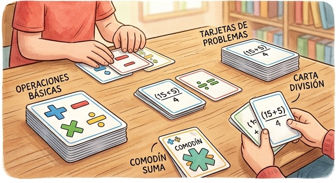
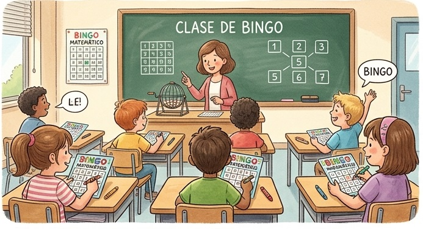
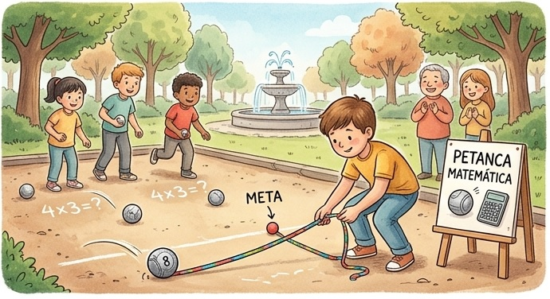

Estrategias de agilidad mental y recursos interactivos para un cálculo elemental intuitivo
Esta sección proporciona una colección de juegos prácticos diseñados para agilizar las destrezas de cálculo mental elemental, acompañados de pautas para desarrollar estrategias eficientes de pensamiento numérico.
Reflexión Inicial: El juego como apoyo, no como único aprendizaje
Para conseguir un cálculo rápido y eficaz no se trata de contar con los dedos ni de realizar el algoritmo formal en la cabeza, sino de emplear atajos y estrategias mentales que simplifican las operaciones complejas adaptándolas a números más sencillos.
Estrategias clave de cálculo mental:
Para sumar números que se aproximan a la decena, resulta mucho más rápido "completar" primero la decena más cercana quitando la cantidad necesaria al otro sumando.
Ejemplo práctico: Para realizar la suma 8 + 7:
- Le "pasamos" 2 del 7 al 8 para transformar el 8 en un 10 (ya que 8 + 2 = 10).
- Al 7 le quedan ahora 5 (7 - 2 = 5).
- La operación se transforma en la suma directa: 10 + 5 = 15.
En restas de dos cifras menos una cifra con paso por la decena, es más ágil calcular la distancia al 10 desde el sustraendo y sumársela a la unidad del minuendo.
Ejemplo práctico: Para realizar la resta 12 - 7:
- Calculamos cuánto le falta al 7 para llegar al 10: le faltan 3.
- Del 10 al 12 hay 2 unidades.
- La resta se transforma en la simple suma: 2 + 3 = 5.
A diferencia de la suma y la resta, donde las estrategias de descomposición son fluidas, en la multiplicación y la división elemental es imprescindible saberse las tablas de memoria. Las tablas de multiplicar son la piedra angular sobre la que se fundamenta la división y todo el cálculo algebraico posterior en secundaria.
Modalidades de Juego: Tarjetas de Operaciones Básicas
Los juegos de cartas están diseñados para trabajar de forma específica y progresiva las operaciones básicas de cálculo (suma de una cifra, suma de dos cifras, restas, tablas de multiplicar, divisiones de las tablas y sencillas operaciones de números enteros).
Cada una de las modalidades de cartas cuenta habitualmente con tres versiones o modos de juego adaptados al aula y al trabajo individual:
- Versión Clase: Diseñada para proyectar en el aula. En la pantalla se muestran varias cartas simultáneamente para que todos los alumnos de la clase puedan ir rellenando una ficha de trabajo individual con las soluciones y, posteriormente, ellos mismos cuenten sus aciertos.
- Versión Un Jugador: Ideal para interactuar de forma individual directamente sobre la pantalla digital o dispositivo, respondiendo las cartas a su propio ritmo.
- Versión Dos Jugadores: Permite competir por turnos o por velocidad frente a otro compañero en la misma pantalla digital, dinamizando la práctica diaria.
Acceso a los Juegos Matemáticos
Haz clic en cualquiera de las siguientes tarjetas para ir directamente al juego seleccionado. Todos están alojados en la misma plataforma, por lo que una vez dentro podrás explorar y cambiar a muchos otros juegos interactivos.


